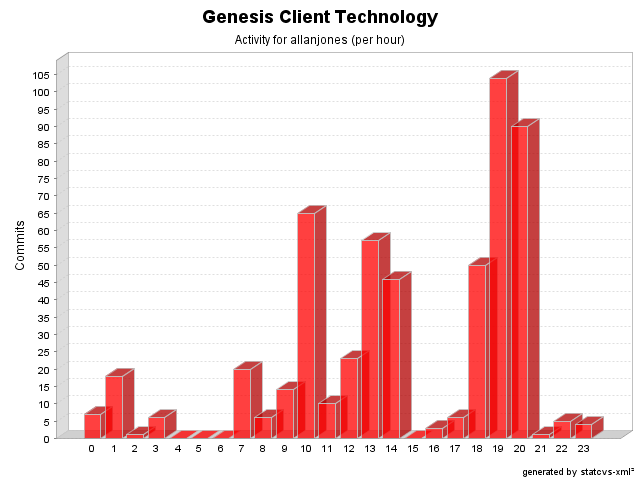

| Login: allanjones Fullname: allanjones Revisions: 536 Lines of Code: 17796 Added Lines of Code: 20881 Lines of Code per Change: 33,2 |

| Date | Author | File/Message |
|---|---|---|
| 11/09/06 18:47 | allanjones | ComponentBinderRegistryFactory renamed to ComponentBinderRegistry. WidgetBinderRegistryFactory renamed to WidgetBinderRegistry. (10 Files changed, 511 Lines changed) src/net/java/dev/genesis/ui/swing/ComponentBinderRegistryFactory.java 1.4 removed src/net/java/dev/genesis/ui/swt/WidgetBinderRegistry.java 1.1 added 103 test-src/net/java/dev/genesis/ui/swt/WidgetBinderRegistryTest.java 1.1 added 144 test-src/net/java/dev/genesis/ui/swt/WidgetBinderRegistryFactoryTest.java 1.3 removed test-src/net/java/dev/genesis/ui/swing/ComponentBinderRegistryTest.java 1.1 added 155 src/net/java/dev/genesis/ui/swt/WidgetBinderRegistryFactory.java 1.3 removed src/net/java/dev/genesis/ui/swing/SwingBinder.java 1.16
(+1
-2)
src/net/java/dev/genesis/ui/swing/ComponentBinderRegistry.java 1.1 added 106 src/net/java/dev/genesis/ui/swt/SWTBinder.java 1.4
(+2
-2)
test-src/net/java/dev/genesis/ui/swing/ComponentBinderRegistryFactoryTest.java 1.3 removed |
| 06/09/06 19:21 | allanjones | Minor changes. Missing source header. Added logic to handle InvocationTargetExceptions
(2 Files changed,
25 Lines changed) src/net/java/dev/genesis/script/bsf/javascript/WrapFactory.java 1.2
(+22
-0)
src/net/java/dev/genesis/script/mustang/MustangScriptContext.java 1.3
(+3
-0)
|
| 06/09/06 19:06 | allanjones | Issue #368.SwingExceptionHandler and SWTExceptionHandler display the stack trace in a scrollable component. (5 Files changed, 207 Lines changed) src/net/java/dev/genesis/ui/swt/SWTExceptionHandler.java 1.2
(+24
-9)
src/net/java/dev/genesis/ui/binding/AbstractDispatcherExceptionHandler.java 1.2
(+6
-1)
src/net/java/dev/genesis/ui/swt/ErrorReporterDialog.java 1.1 added 127 src/net/java/dev/genesis/ui/swing/SwingBinder.java 1.15
(+11
-7)
src/net/java/dev/genesis/ui/swing/SwingExceptionHandler.java 1.5
(+39
-4)
|
| 31/08/06 18:06 | allanjones | Using javax.script.Compilable and javax.script.CompiledScript to pre compile scripts.
(7 Files changed,
101 Lines changed) src/net/java/dev/genesis/script/mustang/MustangScriptContext.java 1.2
(+11
-6)
src/net/java/dev/genesis/script/mustang/MustangExpression.java 1.2
(+23
-1)
src/net/java/dev/genesis/script/mustang/bridge/JavaxScriptBridge.java 1.2
(+48
-33)
src/net/java/dev/genesis/script/mustang/bridge/ScriptEngine.java 1.2
(+1
-0)
src/net/java/dev/genesis/script/mustang/MustangScript.java 1.2
(+14
-6)
src/net/java/dev/genesis/script/mustang/bridge/ScriptContext.java 1.2
(+4
-1)
src/net/java/dev/genesis/script/mustang/bridge/Bindings.java 1.2 removed |
| 31/08/06 18:04 | allanjones | Removed system.out
(2 Files changed,
0 Lines changed) test-src/net/java/dev/genesis/ui/swt/widgets/ListWidgetBinderTest.java 1.2
(+0
-2)
test-src/net/java/dev/genesis/ui/swt/widgets/ComboWidgetBinderTest.java 1.2
(+0
-1)
|
| 31/08/06 09:00 | allanjones | Issue #350. Added support for javax.script specified by JSR-223. Removed JXPath dependencies. New validator: validateScript (that uses the current script language)
(14 Files changed,
548 Lines changed) src/net/java/dev/genesis/script/mustang/MustangExpression.java 1.1 added 27 src/net/java/dev/genesis/script/mustang/MustangScript.java 1.1 added 39 src/net/java/dev/genesis/script/mustang/bridge/ScriptEngine.java 1.1 added 25 src/messages.properties.sample 1.7
(+1
-0)
src/net/java/dev/genesis/ui/BasicValidator.java 1.8
(+20
-5)
src/validator-rules.xml.sample 1.3
(+9
-3)
src/net/java/dev/genesis/script/mustang/bridge/Bindings.java 1.1 added src/net/java/dev/genesis/script/mustang/bridge/JavaxScriptBridge.java 1.1 added 150 src/net/java/dev/genesis/script/mustang/MustangScriptFactory.java 1.1 added 41 src/net/java/dev/genesis/script/mustang/bridge/ScriptEngineManager.java 1.1 added 23 src/net/java/dev/genesis/script/ScriptUtils.java 1.5
(+17
-10)
src/net/java/dev/genesis/script/mustang/bridge/ScriptContext.java 1.1 added 26 src/net/java/dev/genesis/script/mustang/MustangScriptContext.java 1.1 added 88 src/net/java/dev/genesis/script/ScriptRegistry.java 1.2
(+82
-40)
|
| 31/08/06 08:51 | allanjones | Removed JXPath dependency
(1 Files changed,
3 Lines changed) src/net/java/dev/genesis/helpers/StartupHelper.java 1.5
(+3
-4)
|
| 31/08/06 08:28 | allanjones | Javadocs and minor changes
(2 Files changed,
3 Lines changed) test-src/net/java/dev/genesis/ui/swing/components/JTextComponentBinderTest.java 1.3
(+1
-1)
src/net/java/dev/genesis/ui/swing/SwingBinder.java 1.14
(+2
-2)
|
| 31/08/06 07:43 | allanjones | Some javadocs and registerWidgetBinder method should be public
(1 Files changed,
27 Lines changed) src/net/java/dev/genesis/ui/binding/AbstractBinder.java 1.9
(+27
-1)
|
| 31/08/06 07:39 | allanjones | Wrong package name fixed
(12 Files changed,
1885 Lines changed) test-src/net/java/dev/genesis/ui/swt/widgets/TextWidgetBinderTest.java 1.1 added 125 test-src/net/java/dev/genesis/ui/swt/widgets/ButtonGroupBinderTest.java 1.1 added 188 test-src/net/java/dev/genesis/ui/swt/widgets/ProgressBarWidgetBinderTest.java 1.1 added 73 test-src/net/java/dev/genesis/ui/swt/widgets/SliderWidgetBinderTest.java 1.1 added 97 test-src/net/java/dev/genesis/ui/swt/widgets/ToggleButtonWidgetBinderTest.java 1.1 added 96 test-src/net/java/dev/genesis/ui/swt/widgets/ButtonWidgetBinderTest.java 1.1 added 73 test-src/net/java/dev/genesis/ui/swt/widgets/SpinnerWidgetBinderTest.java 1.1 added 98 test-src/net/java/dev/genesis/ui/swt/widgets/LabelWidgetBinderTest.java 1.1 added 69 test-src/net/java/dev/genesis/ui/swt/widgets/ComboWidgetBinderTest.java 1.1 added 340 test-src/net/java/dev/genesis/ui/swt/widgets/AbstractWidgetBinderTest.java 1.1 added 99 test-src/net/java/dev/genesis/ui/swt/widgets/TableWidgetBinderTest.java 1.1 added 220 test-src/net/java/dev/genesis/ui/swt/widgets/ListWidgetBinderTest.java 1.1 added 407 |